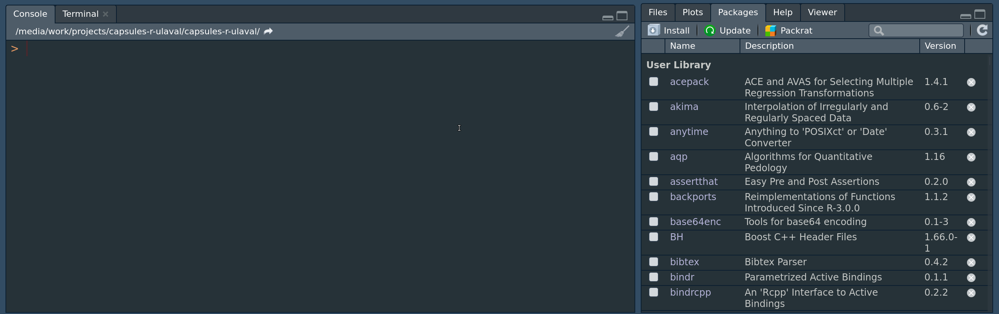

Code
library(MASS) # Charger la librairie en mémoire
?MASS # Accéder à l'aide de la librairieÀ la fin de cette capsule, vous serez en mesure de:
R est un langage (et un environnement) de programmation dédié à la manipulation, l’analyse statistique et la visualisation de données.
Il y a plusieurs raisons pourquoi R est utilisé de plus en plus dans les domaines de la science des données massives.
Pour installer R, il suffit de se rendre sur le site suivant et de télécharger la dernière version de R:
Une fois l’installation de R effectuée, nous pouvons procéder à l’installation de RStudio qui est offre un environnement de travail graphique et convivial. Le fichier d’installation de RStudio peut être téléchargé à l’adresse suivante:
Visionnez la capsule vidéo portant sur l’installation de R et RStudio ainsi qu’un premier tour de l’interface de RStudio.
L’une des grandes forces de R est sa très grande communauté d’utilisateurs qui développent régulièrement de nouvelles fonctionnalités (statistiques, graphiques, etc.). Ces fonctionnalités se regroupent dans des entités nommées library ou package. Pour installer une librairie, vous devez aller sur l’onglet Packages dans la fenêtre inférieure droite de RStudio. Par la suite il faut cliquer sur install et une nouvelle fenêtre s’ouvrira. Entrez le nom de la librairie à installer et cliquez sur install. Dans l’exemple ci-bas, la librairie MASS est installée.

Une fois la librairie installée, il faut la charger en mémoire à l’aide de la fonction library(nom_de_la_library).
Les librairies doivent être chargées en mémoire à chaque démarrage de R ou RStudio. Il est conseillé de les charger au début de votre script R1.
Voir la capsule Le script Bonnes pratiques dans R et RStudio pour une explication plus complète sur l’utilisation de scripts.↩︎
---
title: Capsule 1
---
## Objectifs de la capsule
À la fin de cette capsule, vous serez en mesure de:
1. Comprendre ce qu’est **R**.
2. Installer R et RStudio.
3. Démarrer RStudio et être prêt à travailler avec des données.
4. Installation et mise à jour de librairies.
## Capsule vidéo
{{< video https://youtu.be/zAfDhGRohNQ >}}
## Matériel accompagnateur
### Qu'est-ce que R?
R est un langage (et un environnement) de programmation dédié à la manipulation, l’analyse statistique et la visualisation de données.
Il y a plusieurs raisons pourquoi R est utilisé de plus en plus dans les domaines de la science des données massives.
1. Gratuit et _open source_.
2. Multiplateformes (Windows, Mac et Linux).
3. Excellentes capacités graphiques (idéal pour la préparation d’articles scientifiques).
4. Facile de développer vos propres fonctions (automatisation).
5. Très grande communauté d'utilisateurs et de développeurs (beaucoup de librairies, aide, etc.).
### Installation de R et RStudio
Pour installer R, il suffit de se rendre sur le site suivant et de télécharger la dernière version de R:
- Télécharger R [https://cran.r-project.org/](https://cran.r-project.org/)
Une fois l'installation de R effectuée, nous pouvons procéder à l'installation de RStudio qui est offre un environnement de travail graphique et convivial. Le fichier d'installation de RStudio peut être téléchargé à l'adresse suivante:
- Télécharger RStudio: [https://www.rstudio.com/products/rstudio/download/](https://www.rstudio.com/products/rstudio/download/)
::: {.callout-tip}
Visionnez la capsule vidéo portant sur l'installation de R et RStudio ainsi qu'un premier tour de l'interface de RStudio.
:::
### Installation de librairies
L'une des grandes forces de R est sa très grande communauté d'utilisateurs qui développent régulièrement de nouvelles fonctionnalités (statistiques, graphiques, etc.). Ces fonctionnalités se regroupent dans des entités nommées _library_ ou _package_. Pour installer une librairie, vous devez aller sur l'onglet _Packages_ dans la fenêtre inférieure droite de RStudio. Par la suite il faut cliquer sur _install_ et une nouvelle fenêtre s'ouvrira. Entrez le nom de la librairie à installer et cliquez sur _install_. Dans l'exemple ci-bas, la librairie `MASS` est installée.

Une fois la librairie installée, il faut la charger en mémoire à l'aide de la fonction `library(nom_de_la_library)`.
```{r, echo=TRUE, eval=FALSE, comment=NULL}
library(MASS) # Charger la librairie en mémoire
?MASS # Accéder à l'aide de la librairie
```
::: {.callout-tip}
Les librairies doivent être chargées en mémoire à chaque démarrage de R ou RStudio. Il est conseillé de les charger au début de votre script R[^1].
:::
[^1]: Voir la capsule _Le script Bonnes pratiques dans R et RStudio_ pour une explication plus complète sur l'utilisation de scripts.